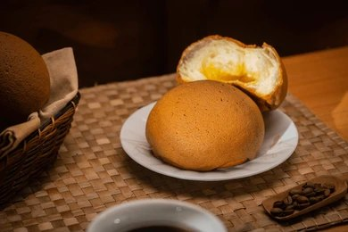
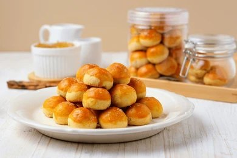

Roti Boy
Bahan-bahan
- Bahan Roti: 250 gr tepung terigu protein tinggi, 65 gr gula pasir, 20 gr susu bubuk, 5 gr ragi instan, 1 butir telur, 100 ml air dingin, 45 gr margarin, 4 gr garam.
- Bahan Topping: 4 gr kopi instan (Nescafe), 1 sdm air panas, 60 gr butter, 50 gr gula halus, 1 butir telur, 70 gr tepung terigu protein rendah.
Langkah Pembuatan
- Adonan Roti: Masukkan gula, tepung, susu bubuk dan ragi, aduk rata. Masukkan telur, mixer kecepatan rendah. Tambahkan air sedikit demi sedikit.
- Jika sudah menggumpal, masukkan margarin dan garam. Mixer kembali sampai kalis elastis. Bulatkan adonan, tutup dengan kain/plastik dan diamkan ±15 menit.
- Membuat Topping: Seduh kopi dengan air panas. Di mangkok lain, mixer butter sebentar, tambahkan gula halus, telur, dan pasta kopi. Masukkan tepung terigu, aduk rata. Masukkan ke plastik segitiga.
- Perakitan: Kempeskan adonan roti, potong-potong 45 gr dan rounding (bulatkan). Pipihkan, isi dengan margarin beku, bulatkan kembali dan taruh di loyang. Diamkan 35-40 menit.
- Setelah 40 menit, beri topping melingkar di atas roti. Panggang di oven bersuhu 180°C (api atas bawah) selama 15-18 menit. Siap dihidangkan.

Bolu Pandan Panggang
Bahan-bahan
- 4 butir telur
- 130 gr susu bubuk (atau gula pasir sesuai selera)
- 6 gr SP
- 10 gr tepung maizena
- 140 gr tepung terigu pro sedang
- 80 gr santan instan
- 40 gr minyak goreng
- 80 gr margarin (lelehkan)
- 2 sdt pasta pandan
Langkah Pembuatan
- Masukkan telur, gula (susu bubuk), dan SP ke mangkok. Mixer dengan kecepatan tinggi ±5 menit hingga putih berjejak/pucat.
- Masukkan santan dan pasta pandan, mixer kecepatan rendah ±1 menit. Tambahkan maizena dan mixer kembali ±½ menit.
- Masukkan tepung terigu perlahan (mixer 1-2 menit), lalu masukkan minyak goreng hingga rata. Terakhir, masukkan margarin leleh.
- Tuang adonan ke dalam loyang yang sudah diolesi.
- Panggang dalam oven (suhu 170°C, api atas bawah) selama 50 menit. Jika pakai oven tangkring, 60 menit api sedang. Angkat dan potong.

Kue Kering Nastar
Bahan-bahan
- 125 gr margarin & 125 gr butter
- 80 gr gula halus
- 350 gr tepung terigu pro rendah
- 10 gr susu bubuk & 150 gr tepung maizena
- 2 kuning telur
- 1 ½ sdt garam & Selai nanas (isian)
- Bahan Olesan: 2 kuning telur, 1 sdt minyak sayur
Langkah Pembuatan
- Mixer butter, margarin, dan gula halus selama 1 menit. Tambahkan kuning telur, mixer ½ menit. Masukkan susu bubuk, aduk dengan spatula.
- Masukkan tepung terigu dan maizena perlahan sambil diayak. Uleni sampai kalis.
- Timbang adonan 7-8 gr, pipihkan dan isi selai nanas (3-4 gr). Bulatkan dan tata di loyang berlapis kertas roti.
- Panggang oven (api bawah, 150°C) selama 35-40 menit. Putar loyang di menit ke-20.
- Keluarkan, dinginkan sebentar, olesi permukaan dengan bahan olesan. Panggang lagi 7-10 menit (api atas).

Donat Ubi Kuning
Bahan-bahan
- 250 gr tepung terigu pro tinggi (Cakra)
- 100 gr ubi jalar (kukus & haluskan)
- 2 kuning telur
- 40 gr gula pasir & 30 gr margarin
- 90 ml susu cair dingin (Ultra)
- 1½ sdt ragi (Fermipan) & ¼ sdt garam
- Topping: Gula halus, meses, cokelat batang
Langkah Pembuatan
- Aduk rata tepung terigu, gula pasir, dan ragi. Masukkan kuning telur dan ubi halus.
- Tuang susu cair sedikit demi sedikit. Mixer hingga setengah kalis, lalu masukkan margarin dan garam. Mixer hingga kalis elastis.
- Bagi adonan masing-masing 35 gr, bulatkan (rounding). Diamkan di loyang bertabur tepung selama 30 menit.
- Tekan perlahan hingga pipih, lubangi tengahnya dengan spuit. Proofing (tutup kain) selama 25 menit.
- Goreng dengan api kecil hingga keemasan. Dinginkan dan hias dengan topping.

Roti Pisang
Bahan-bahan
- 175 gr tepung Cakra & 75 gr Segitiga Biru
- 65 gr gula pasir & 10 gr susu bubuk
- 5 gr ragi instan & 1 gr Bakerine Plus
- 2 butir kuning telur & 110 ml susu cair dingin
- 40 gr margarin & sejumput garam
- Pisang, cokelat, dan keju (untuk isian)
Langkah Pembuatan
- Campur tepung, gula, susu bubuk, dan ragi. Tambahkan susu cair dan kuning telur, mixer kecepatan sedang (3-5 menit) hingga setengah kalis.
- Masukkan margarin dan garam. Mixer cepat (7-8 menit) hingga kalis elastis.
- Potong adonan seberat 50 gr, bulatkan. Proofing dengan tutup kain selama 20 menit.
- Gilas adonan bentuk oval, isi dengan pisang, cokelat, dan keju. Bentuk sesuai selera dan letakkan di atas baking paper.
- Proofing 1 jam. Olesi dengan susu cair, panggang di oven 180°C selama 17 menit. Selagi panas olesi margarin.

Risol Mayo
Bahan-bahan
- Bahan Kulit: 300 gr tepung terigu, ½ sdt garam, 2 butir telur, 600 ml air.
- Bahan Isian: 3 butir telur (rebus), sosis, 300 gr mayones, 40 gr susu kental manis.
- Bahan Pelapis: Tepung panir, campuran tepung + air.
Langkah Pembuatan
- Membuat Kulit: Campur terigu dan garam. Masukkan telur kocok, tambahkan air bertahap. Saring adonan. Dadar tipis di teflon panas hingga adonan habis.
- Menyiapkan Isian: Campurkan mayones dengan susu kental manis hingga rata.
- Perakitan: Ambil 1 lembar kulit, letakkan irisan sosis, telur rebus, dan saus mayo. Gulung rapat.
- Celupkan risol ke campuran tepung+air, gulingkan di tepung panir hingga rata.
- Goreng dalam minyak panas hingga kuning keemasan. Siap disajikan.

Cake Tape Singkong
Bahan-bahan
- 100 gr tepung terigu pro rendah & 10 gr maizena
- 120 gr gula pasir & 20 gr susu bubuk
- 3 kuning telur & 3 telur utuh
- 9 gr SP & 120 gr butter
- 150 gr tape singkong (lumatkan)
- 80 gr keju parut
- Susu kental manis secukupnya
Langkah Pembuatan
- Mixer terigu, gula, susu bubuk, maizena, SP, dan semua telur dengan kecepatan tinggi (7-8 menit) hingga mengembang kental berjejak.
- Masukkan tape lumat dan susu kental manis, mixer kecepatan rendah 30 detik.
- Tambahkan keju parut dan butter cair bertahap, aduk perlahan dengan spatula hingga rata.
- Tuang ke loyang (20x20x4 cm) beralas baking paper. Hentakkan agar udara keluar dan taburi topping sesuai selera.
- Panggang suhu 160°C selama 40-50 menit hingga kecokelatan. Potong saat sudah dingin.

Bolu Pisang
Bahan-bahan
- 250 gr pisang ambon matang (haluskan)
- 5 butir telur
- 100 gr gula pasir & 70 gr gula palem
- 200 gr tepung terigu
- ½ sdt baking powder & ½ sdt soda kue
- 200 gr margarin (cairkan)
- 1 sdt SP & ½ sdt vanili cair
Langkah Pembuatan
- Ayak tepung terigu, baking powder, dan soda kue agar halus. Sisihkan.
- Mixer telur, gula pasir, gula palem, SP, dan vanili dengan kecepatan tinggi selama 10 menit hingga mengembang.
- Masukkan pisang halus, mixer sebentar dengan kecepatan rendah.
- Masukkan campuran tepung kering perlahan. Matikan mixer.
- Tuang margarin cair dan aduk balik pakai spatula. Tuang ke loyang beroles margarin dan hentakkan. Panggang di oven 180°C selama 45 menit.

Martabak Mini
Bahan-bahan
- 250 gr terigu sedang (Segitiga Biru)
- 40 gr gula pasir & sejumput garam
- 3 sdm margarin cair
- 300 ml air putih / susu UHT
- 2 butir telur (kocok lepas)
- ½ sdt ragi instan & ½ sdt baking soda
- Topping: Keju, meses, susu kental manis
Langkah Pembuatan
- Aduk rata terigu, gula, garam, dan air/susu dengan whisker. Masukkan ragi instan, aduk kembali. Diamkan adonan selama 40 menit.
- Buka tutup adonan, masukkan kocokan telur, margarin cair, dan soda kue. Aduk perlahan hingga menyatu.
- Panaskan cetakan teflon (api kecil). Tuang 1 sendok sayur adonan, tekan sedikit agar membentuk pinggiran.
- Jika mulai bergelembung bersarang, taburi gula pasir sedikit dan tutup teflon.
- Angkat saat permukaan matang. Olesi margarin panas-panas, beri topping meses/keju dan susu.

Rainbow Cake
Bahan-bahan
- 250 gr tepung terigu pro sedang
- 200 gr gula pasir & 6 butir telur
- 200 ml minyak sayur & 200 ml susu cair
- 1 sdm SP & 1 sdt baking powder
- 1 sdt vanili bubuk & pewarna makanan
- Bahan Krim: 250 gr whipped cream bubuk, 400 ml air dingin, 1 sdt vanili.
Langkah Pembuatan
- Mixer telur, gula, dan SP kecepatan tinggi hingga putih pucat. Masukkan terigu, baking powder, dan vanili ayak, aduk rata.
- Tuang minyak dan susu perlahan, aduk perlahan. Bagi adonan jadi 6 dan beri pewarna pelangi (merah, jingga, kuning, hijau, biru, ungu).
- Panggang terpisah tiap warna dalam oven suhu 180°C selama 15-20 menit di loyang tipis. Angkat dan dinginkan.
- Krim (Frosting): Mixer whipped cream bubuk dengan air dingin dan vanili hingga mengental kaku.
- Oleskan krim di antara susunan lapis kue. Hias bagian luarnya. Rainbow Cake siap dipotong!